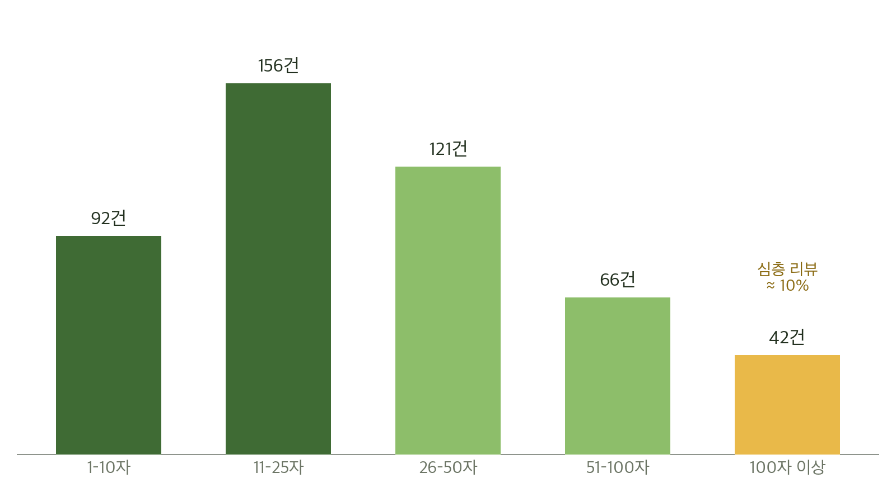
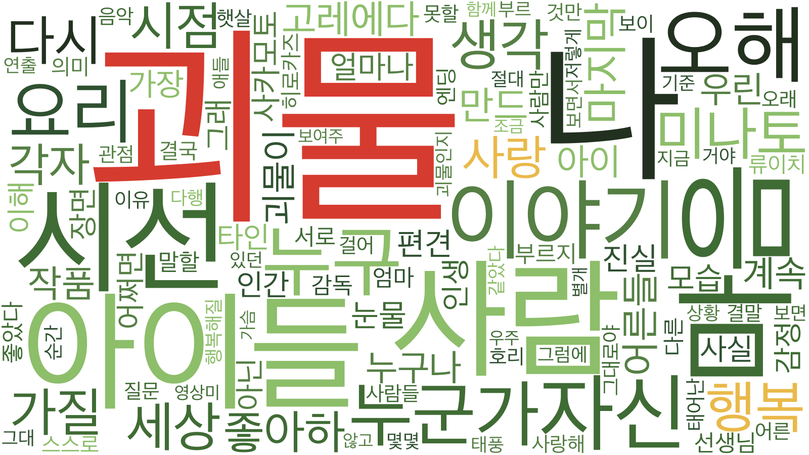
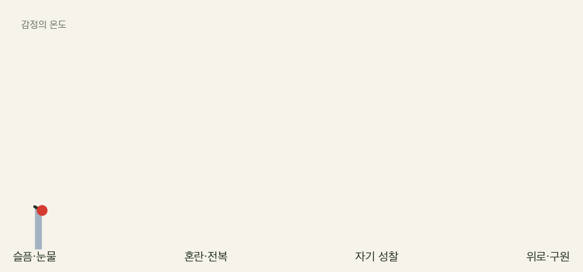

"누가 괴물인가?"라는 질문이 관객 자신에게 되돌아오는 경험
왓챠 콘텐츠 페이지를 렌더링·스크롤해 마크다운으로 추출
작성자와 본문을 분리 — 리뷰 477건, 총 23,620자
플랫폼에서 잘린 59건(12%)을 개별 코멘트 페이지에서 다시 수집
불용어 제외 단어·연속 어구 빈도 분석
9개 감상 축으로 분류하고 대표 리뷰를 읽어 해석

"누가 괴물인가" — 관객이 가장 많이 쓴 말
괴물은 나 · 시점 구조 · 오해와 편견 · 학교와 시스템
결말 대사 · 음악 · 영상미 · 아역 · 사랑
관객은 영화가 던진 질문을 그대로 들고 극장을 나왔다. 리뷰에 가장 많이 남은 단어와 문장부터 본다.

영화는 엄마 → 담임 → 아이들의 시점으로 같은 사건을 세 번 보여준다. 관객의 판단도 세 번 뒤집힌다.
아들이 다쳐서 돌아왔다. 의심은 담임에게 향하고, 학교는 고개만 숙인다.
같은 사건이 다시 보인다. 가해자로 지목된 사람에게도 사정이 있었다.
어른들이 보지 못한 두 아이의 세계. 앞선 모든 판단이 다시 흔들린다.
비극적인 결말인데도 관객은 '위로'를 말한다. 무엇이 슬픔을 위로로 바꿨는지 본다.
우린 새로 태어난 걸까?
그런 건 없는 것 같아.
그래? 다행이네.

"작품성과는 별개로 제 취향과는 머네요."
"중반까지도 화병 나서 끌 뻔했다. 끝까지 다 보니 명작이란 걸 알았다."
"아이 담임 파트에서는 《더 헌트》와 같은 작위성이 느껴졌다."
"부조리극과 리얼리즘이 어색하게 결합되고 있다고 느꼈다."
일부 리뷰에서 서사 해석을 둘러싼 갈등이 드러남.
다층 시점이 곧 "진실은 하나가 아니다"라는 메시지
괴물 찾기를 시키다가 결국 관객 자신을 지목
"다시 태어나지 않아도 괜찮다" — 비극 속의 수용과 안도
고레에다(연출) · 사카모토 유지(각본) · 사카모토 류이치(음악)